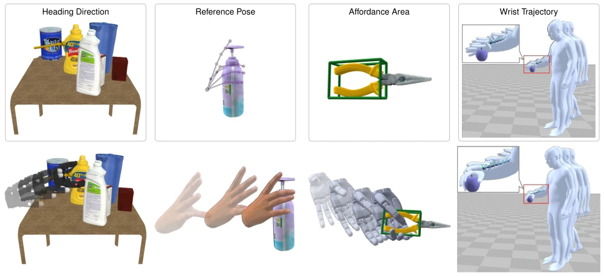
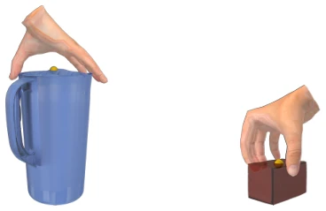
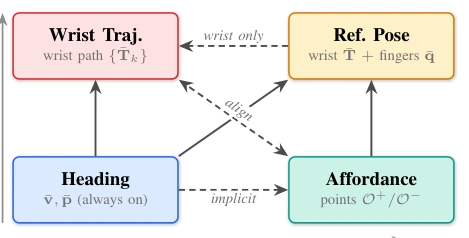
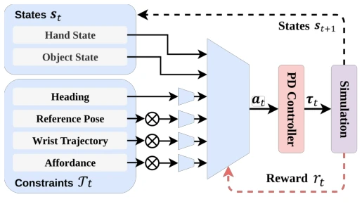
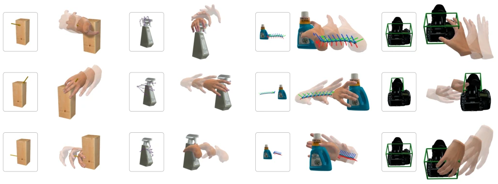
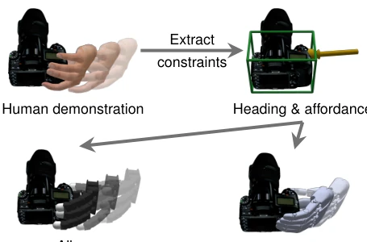

This paper equips GraspXL with a "brain", transforming it from a brute-force gripper that only knows how to grasp into a technician capable of understanding instructions. GraspXL boasts excellent generalization, but is limited to grasping fixed targets, while ConGraspXL attempts to address controllability under multi-constraints. Highlights include hierarchical constraints and a dynamic hand center, indeed making the manipulator more flexible and capable of handling trajectories and poses. However, do not overhype it; it still relies on simulation training, and real-world generalization is not mentioned. Moreover, the success rate drops when constraint combinations increase, indicating that "having it both ways" remains difficult. However, as a low-level controller, it is indeed much stronger than baselines that can only grasp single features, counting as a piece of the puzzle for embodied intelligence. For tasks requiring specific grasping methods (e.g., using scissors), this is more practical than simply optimizing static grasp points, but computational overhead and the sim-to-real gap remain potential risks. Overall, this is an attempt to find a balance between controllability and generalization. Although it does not perfectly solve all problems, it is a significant step forward compared to pure static methods, at least making the manipulator no longer a big fool that only blindly grasps.
Dexterous grasping is typically for specific tasks, such as holding the knife handle for chopping, or functional poses for scissors. Existing work mostly focuses on static grasp configurations [5]-[7] or ignores dynamic interaction [11]-[13]. Although GraspXL [14] has strong generalization, its control interface is fixed and unable to handle complex task constraints. We need a generator that can both generalize and follow commands. Specifically, existing dynamic grasping methods have poor generalization, making them difficult to adapt to unseen objects [12]-[13], while static methods cannot generate temporal motion [3]. GraspXL [14] solves the generalization problem, but lacks support for task-driven constraints (e.g., full-body planned wrist trajectories). This leads to situations where downstream applications like full-body grasp completion or functional grasping are unable to flexibly adapt to different constraint combinations. Therefore, this paper aims to solve how to maintain large-scale generalization while achieving diverse task constraint controllability, filling the gap between general grasping and task-specific grasping.
The overall framework models controllable constrained dexterous grasping as an MDP, trained using PPO in a physics simulator. Inputs include hand/object state and task constraints. The first innovation lies in hierarchical constraint formulation, dividing requirements into four levels: heading, affordance, pose, trajectory, and defining priorities to resolve conflicts, e.g., trajectory takes priority over pose. Second, a masked residual interface is adopted, encoding optional constraints as features and flexibly combining through active masks to avoid interference from invalid constraints. Third, a dynamic hand center is introduced, adaptively adjusting the grasp center with finger opening/closing to adapt to objects of different sizes. Fourth, feedforward wrist guidance is proposed, superimposing wrist residual actions on real-time guidance targets rather than fixed poses to improve trajectory tracking accuracy. Finally, the reward function includes grasp stability and constraint tracking terms to ensure physical rationality. In terms of network architecture, constraint features are concatenated with state after mask gating, the policy outputs residual actions executed by a PD controller. This design allows the policy to handle multiple constraints simultaneously and degrades to general grasp mode when constraints are not activated, maintaining GraspXL's original advantages. Additionally, for anatomical models like MANO, joint limits are also optimized, reducing additional penalty terms and improving training consistency.
Experiments were conducted on GRAB, OakInk, DexYCB, and Objaverse. Baselines include GraspXL [14], D-Grasp [61], and PD control. Evaluation metrics cover success rate and various constraint errors (heading, pose, traj, affordance). Results show ConGraspXL significantly outperforms baselines in success rate under single constraints, e.g., reference pose success rate improved by 36%. Although performance drops under combined constraints, it still maintains a high success rate. On Objaverse large-scale objects, the dynamic hand center brings performance improvement. Cross-dataset testing shows constraint control capability is transferable to unseen data. High success rate is maintained under different hand morphologies (MANO, Allegro, Sharpa), verifying morphological generalization. Ablation experiments confirm the dynamic hand center is crucial for large object grasping. Overall, while maintaining a high success rate, it effectively satisfies diverse task constraints, proving its potential as a low-level controller. Especially on DexYCB unseen data, although the success rate slightly drops, errors are controllable, indicating generalization indeed exists.
其他图片Other Figures

Fig. 1. We present ConGraspXL, a method that can synthesize physics-based grasping motions following various task-driven constraints such as heading directions, affordance, wrist trajectories, and reference poses, serving as a plug-and-play low-level controller for various applications of diverse hand models.

Fig. 3. Dynamic Hand Center. A dynamic hand center (the yellow dot) can adaptively encourage the fingertips to wrap the object of different sizes as the fingers open or close.

Fig. 4. Priority among constraints for wrist control. Trajectory and Heading constraints (on the left) specify the wrist motion, while the Reference Pose and Affordance constraints (on the right) specify the wrist pose and finger contact regions. The top two constraints override the bottom two as they more explicitly specify the intended motion.

Fig. 5. Network architecture. Hand and object states st together with hier- archical constraints Tt are fed to the main network. The optional constraints are separately encoded and gated by activity masks before concatenation. The policy predicts residual actions at, which a PD controller executes the corresponding torques τt in simulation to synthesize stable grasping motions that respect the active constraints.

Fig. 6. Qualitative examples under different constraints. The same policy generates different physically plausible grasping motions when conditioned on different heading, reference pose, wrist trajectory, and contact constraints. Each column corresponds to one constraint type and shows three grasping sequences.

Fig. 8. Cross-embodiment motion synthesis from a human demonstration. ConGraspXL can be used to synthesize corresponding grasping motions for different dexterous robot hands utilizing the task-driven constraints extracted from a human demonstration.